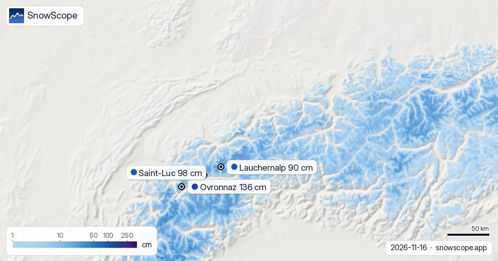

Switzerland: Ovronnaz at 133 % of a normal 16 November
At about 1,898 m, Ovronnaz has 24 cm today, where a normal 16 November has 18 cm: 133 % of the usual depth.
See the live snow forecast for Ovronnaz in the SnowScope appSnow depth, powder alerts and the 3D map, free.
Ahead of a normal year
A week ago the same spot had 8 cm. The early lead matters most for the lower and middle runs, which usually wait until December for this much snow.
In Switzerland, about 16,510 km² of high ground is white today, a gain of 1,820 km² in a day. That is 53 % of the high ground we map in Switzerland.
| Resort | Today | Normal for the date | Share of normal |
|---|---|---|---|
| Ovronnaz | 24 cm | 18 cm | 133 % |
| Saint-Luc | 30 cm | 24 cm | 125 % |
| Crans-Montana | 4 cm | 18 cm | 22 % |
| Lauchernalp | 15 cm | 19 cm | 79 % |
| Aletsch Arena | 11 cm | 17 cm | 65 % |

How this start compares
Here is how the deepest resorts compare with their usual 16 November: Ovronnaz: 24 cm at about 1,898 m, against 18 cm in a normal year; Saint-Luc: 30 cm at about 2,328 m, against 24 cm in a normal year; Crans-Montana: 4 cm at about 2,150 m, against 18 cm in a normal year; Lauchernalp: 15 cm at about 2,264 m, against 19 cm in a normal year.
2 of these 4 resorts are above their usual depth for the date.
These depths are for one height on each mountain, below the top, so they read lower than the upper-slope numbers further down.
In past winters the best snow at Ovronnaz usually came early March / mid-March.
Where to ski first
The deepest snow of the country's resorts is at Ovronnaz: 136 cm.
Then come Saint-Luc (98 cm), Crans-Montana (91 cm), Lauchernalp (90 cm) and Aletsch Arena (84 cm).
At Ovronnaz: 28 cm of fresh snow over three days, 71 cm more expected by Thursday 19 November.
Saint-Luc picked up 12 cm in the last three days and could add 51 cm by Thursday 19 November.
Snow lies on the upper slopes of 206 out of 279 resorts in Switzerland.
The rest of the shortlist: Crans-Montana: 91 cm on top, 19 cm in three days, 64 cm expected; Lauchernalp: 90 cm on top, 13 cm in three days, 56 cm expected; Aletsch Arena: 84 cm on top, 10 cm in three days, 37 cm expected.
Snow on the way?
Snow is in the forecast: up to 69 cm by the end of the third day, up to 112 cm within seven days.
The snowiest day looks like Tuesday 17 November, with up to 29 cm in the snowiest spots.
The second week adds up to 29 cm where it snows most.
Snow depth by height
Climb and the snow gets deeper: 1,000-1,500 m: on average under 1 cm (22 % of the ground white); 1,500-2,000 m: on average 3 cm (92 % of the ground white); 2,000-2,500 m: on average 7 cm (100 % of the ground white); above 2,500 m: on average 18 cm (100 % white).
Skiing conditions
Fresh snow on top of the base means soft turns on the upper slopes, while the lower runs stay patchy.
With more snow in the forecast, the next days should improve things further.
Snow cover today
A week ago it was 13,810 km², so the cover has grown by 2,700 km². The snow line sits near 1,400 m.
Where the fresh snow fell
In the last 72 hours the most new snow, up to 22 cm, fell over the Valais Alps and the Bernese Oberland.
The last 24 hours alone brought up to 14 cm.
About 8,740 km² received at least 5 cm.
The neighbours today
For comparison, the neighbours on the same day: Austria: 38 % white, deepest Kaprun with 83 cm, up to 50 cm in the week ahead; France: 11 % white, deepest Les Arcs with 94 cm, up to 105 cm in the week ahead.
Planning a day on the snow
Above 1,500 m the ground is almost fully white (92 % covered), so runs up there have a continuous base.
Below 1,000 m the slopes are still almost bare.
If you can choose the day, go after Tuesday 17 November: the fresh snow then has time to settle and the roads to be cleared.
Tips for skiers
- Fresh snow on a cold base sticks badly: take care on steep slopes.
- Roads to the higher resorts may need winter tyres or chains.
- Read the local avalanche bulletin before going off-piste.
About these numbers
Resort snow depths are the deepest snow on the resort's upper slopes from the SnowScope snow model (about 1 km, run of 16 November); they are estimates for an area, not a measurement at one point. Station values are measurements on the date shown. Forecasts can change. Always read the official avalanche bulletin before going off-piste.
Cite this report
For research, teaching or the press: the numbers and charts are free to reuse under CC BY 4.0 with this citation.
SnowScope (2026), Switzerland: Ovronnaz at 133 % of a normal 16 November, https://snowscope.app/blog/en/2026/11/switzerland-snow-report-16-november-2026.html, accessed 2026-11-16
SnowScope (Atlas Labs). (2026, November 16). Switzerland: Ovronnaz at 133 % of a normal 16 November. SnowScope snow reports. https://snowscope.app/blog/en/2026/11/switzerland-snow-report-16-november-2026.html
BibTeX
@misc{snowscope2026switzerlandsnowreport16n,
author = {{SnowScope (Atlas Labs)}},
title = {Switzerland: Ovronnaz at 133 % of a normal 16 November},
year = {2026},
month = nov,
howpublished = {\url{https://snowscope.app/blog/en/2026/11/switzerland-snow-report-16-november-2026.html}},
note = {Published 2026-11-16 20:42 UTC; accessed 2026-11-16}
}· CC BY 4.0 · Methods, data and tools →
Ovronnaz: snow and temperature by height, this winter vs last (tools) →
Follow Ovronnaz
Free: a message when fresh snow is coming, and the forecast every morning.
More snow reports

A slope map of Les Grands Montets and seven other ski areas shows how much of the ground is steeper than 30°, 35° and 40°, and why that line matters for avalanches.

We compared the snow on 10 November with each winter's deepest snow at 46 ski resorts over 46 winters. A snowy start helps, but less than many skiers think.

Whistler Blackcomb for every level, with our snow history: about 370 cm at the usual peak at mid-mountain over 46 past winters, March and April the deepest months.